参加三季度居民消费价格预期调查的专家及相关专业人士306人，收回有效问卷306份。目前，我省处于疫情防控常态化阶段，随着疫情防控形势趋稳及生猪价格持续回落，三季度（本期）居民消费价格总水平和主副食品价格虽仍以缓涨预期为主，但看涨预期较上期和去年同期均有所减弱。受前期积压需求集中释放影响，近几个月，省内多地楼市迎来强劲复苏，引发房地产市场价格预期产生变化。三季度，我省商品房市场价格预期较上期明显升温，由平稳预期转为以缓涨预期为主。
一、居民消费价格总水平预期继续缓涨
三季度，预计居民消费价格总水平上涨186人，占比60.78%；预计基本持平83人，占比27.12%；预计有所下降35人，占比11.44% ；预计不能确定2人，占比0.65%。
调查结果表明，约六成的人预计三季度居民消费价格总水平上涨，其中预计缓和上涨的人数占近九成；预计居民消费价格总水平基本持平的人数占近三成；预计下降的人数占约一成。总体来看，绝大多数人持居民消费价格总水平上涨预期，并以缓涨为主。
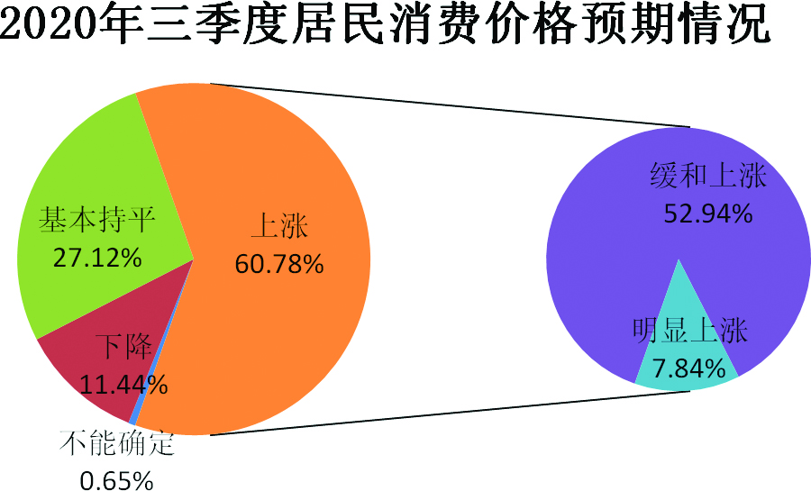
从居民消费价格总水平预期走势看，与上期72.85%的人预计居民消费价格总水平上涨相比，本期减少了12.07个百分点；与去年同期的71.57%相比，本期减少了10.79个百分点。
与上期14.57%的人预计居民消费价格总水平基本持平相比，本期增加了12.55个百分点；与去年同期的26.47%相比，变化不明显。
三季度居民消费价格总水平下降预期仍处低位占比，与上期的12.25%相比，本期减少了0.81个百分点；与去年同期的1.96%相比，本期增加了9.48个百分点。
调查表明，本期居民消费价格总水平继续以缓涨预期为主，但与上期和去年同期相比，持上涨预期的人数占比均有所下降。
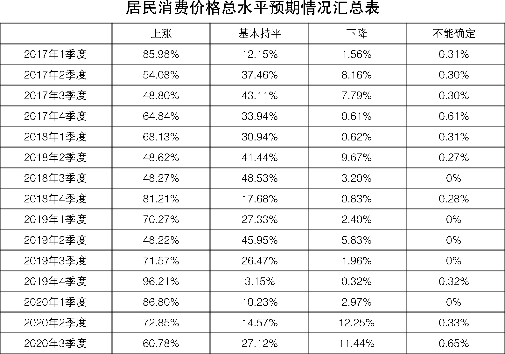
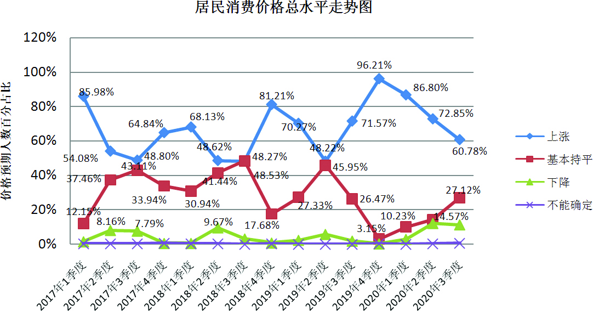
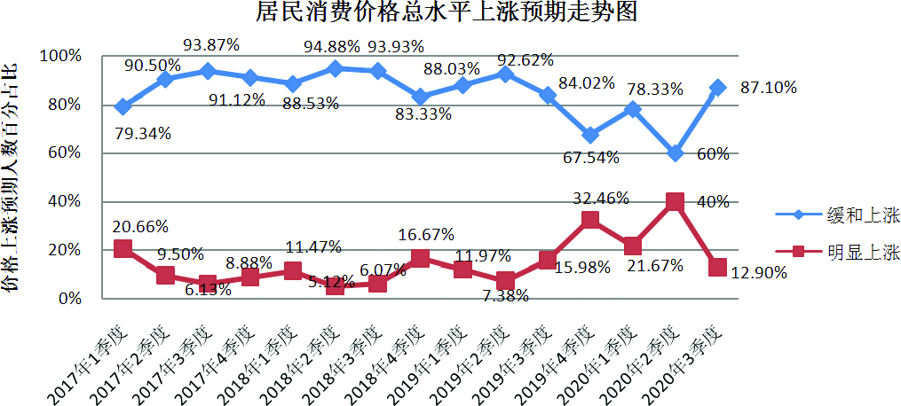
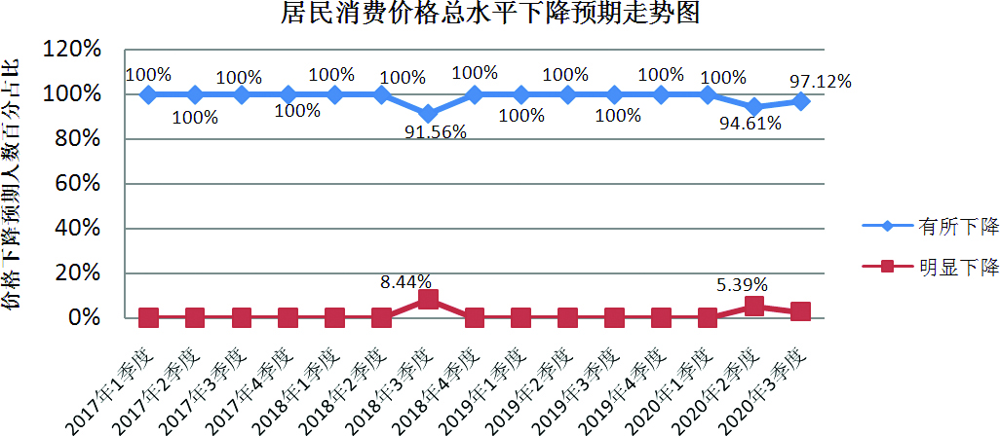
二、主副食品价格预期保持缓涨
三季度，预计主副食品价格上涨155人，占比50.65%；预计基本持平115人，占比37.58%；预计下降36人，占比11.76%。
调查结果表明，约五成的人预计三季度主副食品价格上涨，其中持缓和上涨预期的人数超过八成；预计主副食品价格基本持平的人数占近四成；预计下降的人数占约一成。总体来看，大部分人预计主副食品价格上涨，并以缓涨为主。
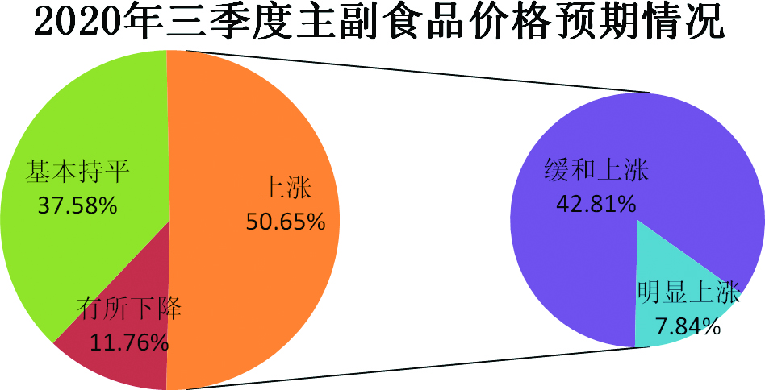
从主副食品价格预期走势看，与上期70.53%的人预计主副食品价格上涨相比，本期减少了19.88个百分点；与去年同期的69.93%相比，本期减少了19.28个百分点。
与上期15.89%的人预计主副食品价格基本持平相比，本期增加了21.69个百分点；与去年同期的28.10%相比，本期增加了9.48个百分点。
与上期13.25%的人预计主副食品价格下降相比，本期减少了1.49个百分点；与去年同期的1.96%相比，本期增加了9.8个百分点。
调查显示，三季度主副食品价格继续保持缓涨预期，与上期和去年同期相比，持看涨预期人数占比均有所回落。
大米、食用油和猪肉价格预期：三季度预计大米价格上涨87人，占比28.43%；基本持平209人，占比68.30%；有所下降10人，占比3.27%。预计食用油价格上涨83人，占比27.12%；基本持平209人，占比68.30%；有所下降14人，占比4.58%。预计猪肉价格上涨96人，占比31.38%；基本持平101人，占比33.01%；下降108人，占比35.29%；不能确定1人，占比0.33%。
调查显示，与上期相比，三季度大米和食用油价格预期均由稳中缓涨预期转为平稳预期，持看涨预期人数占比下降明显；与去年同期相比，三季度大米和食用油价格预期变化不大，继续保持平稳价格预期。受生猪产能恢复、屠宰加工企业复工复产及需求端疲弱影响，2月中下旬至5月中下旬，猪肉价格持续下跌，累计跌幅超20%。进入6月份以来，随着端午节临近以及社会生活秩序进一步恢复，猪肉消费明显增加，价格出现反弹。考虑到近期猪肉价格止跌回涨叠加疫情反弹给消费带来的不确定影响，三季度猪肉价格预期明显分化，持上涨、基本持平及下降预期人数相差不大，其中持上涨预期人数占比略超三成，创两年来新低。当前，我省梅雨期与汛期叠加，省内多地连续遭遇强降雨，建议各地重点关注由异常天气及突发自然灾害引发的主副食品价格异常波动，有关部门加强市场供需及价格监测预警，提前做好保供稳价应急预案和重要生活物资储备，确保主副食品价格基本稳定，困难群众生活不受影响。同时，要高度关注疫情全球大流行背景下，国际粮食市场价格变化及影响。
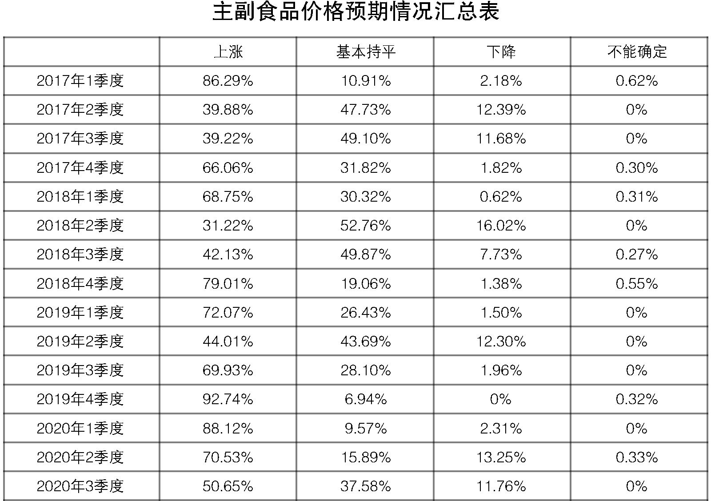
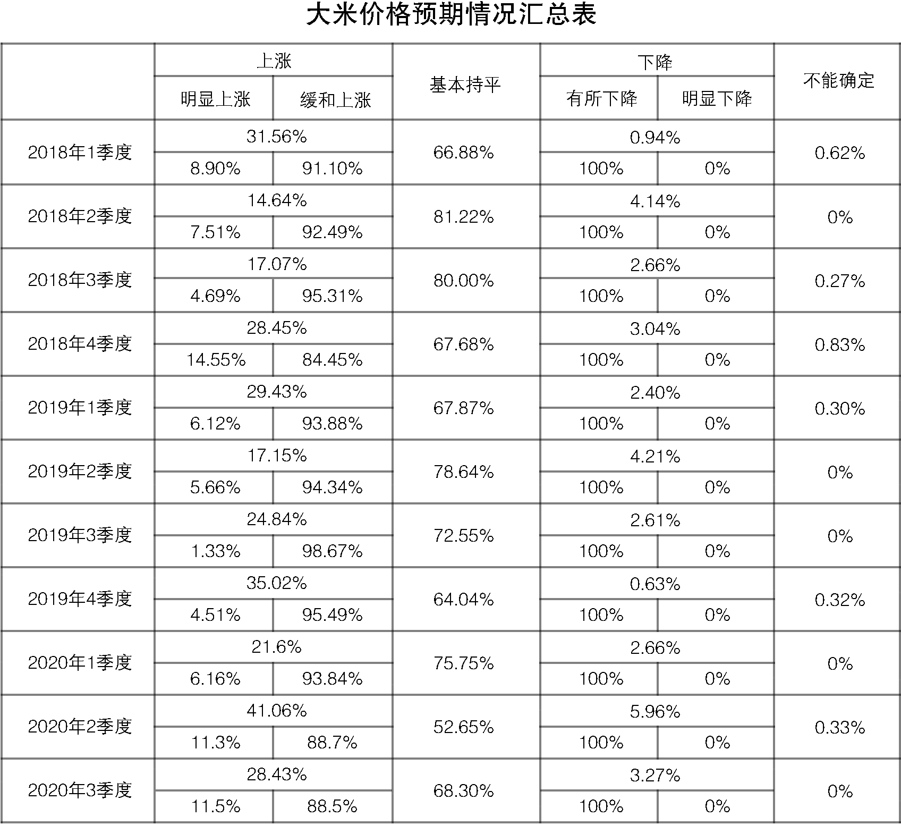
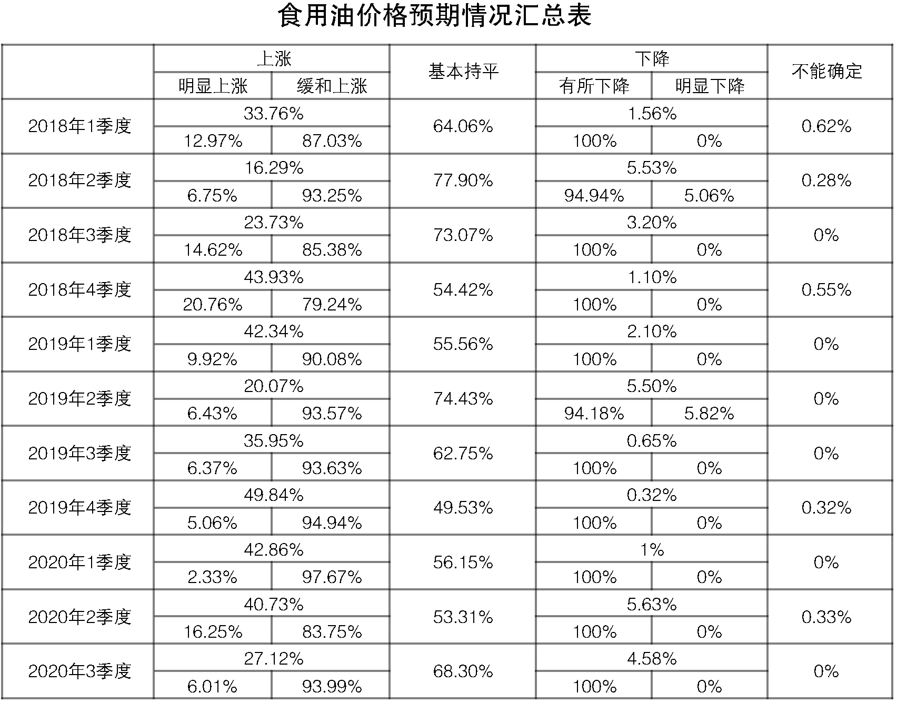
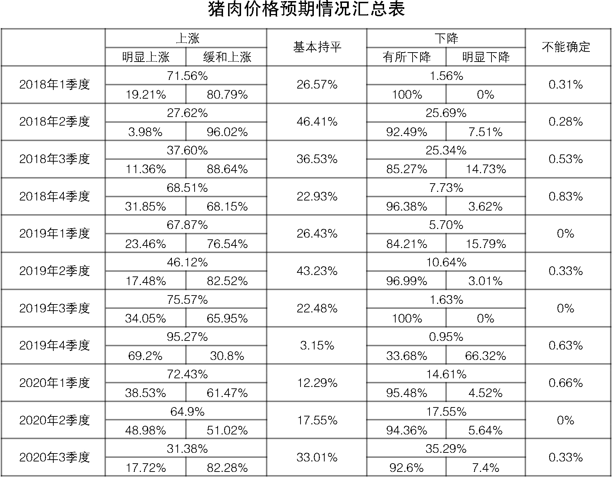
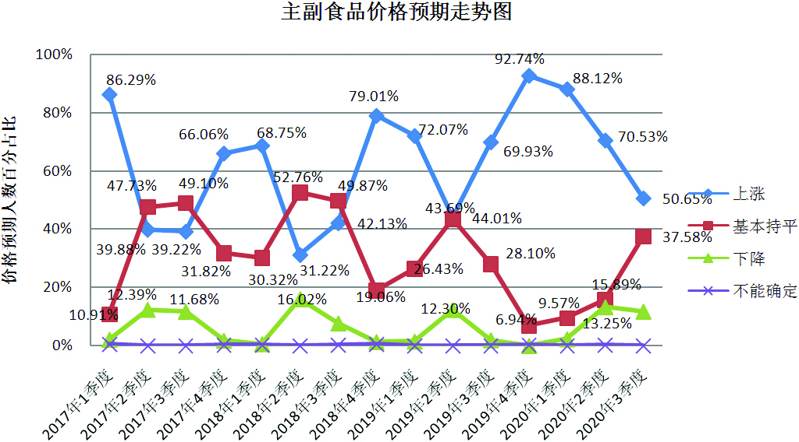
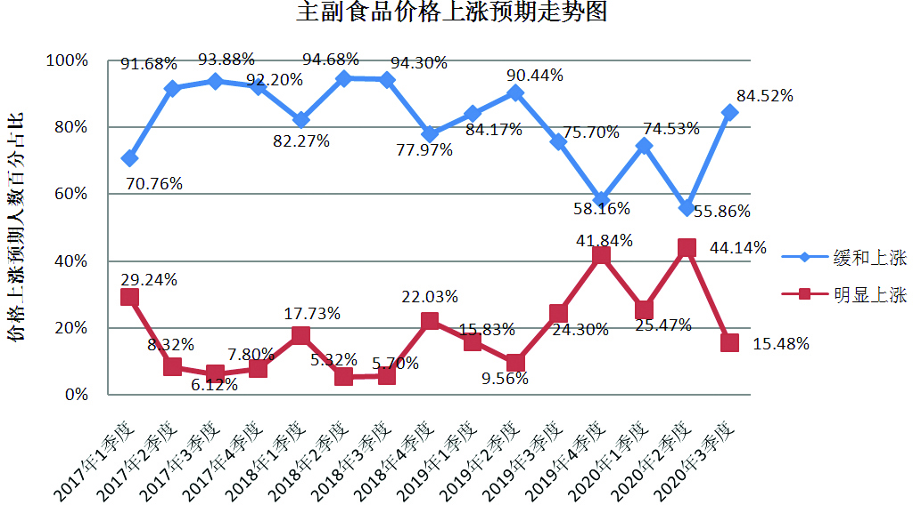
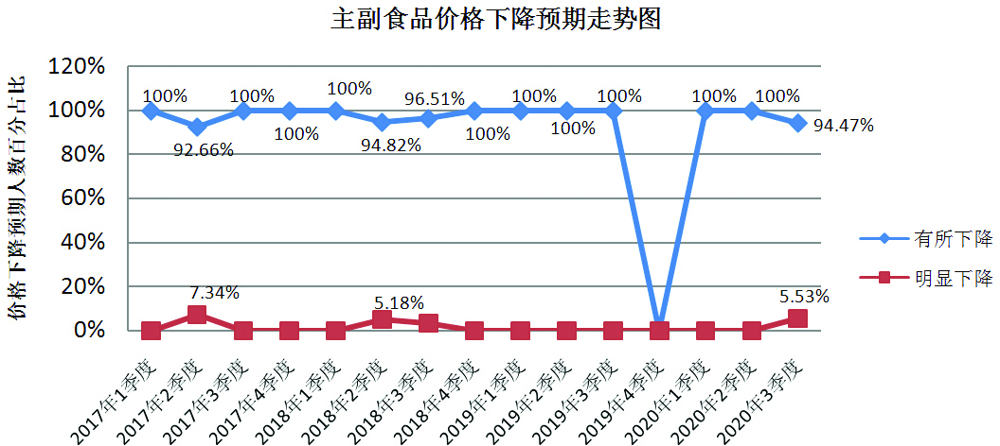
三、商品房价格上涨预期增强，呈缓涨预期
三季度，预计商品房总体价格上涨171人，占比55.89%；预计总体价格基本持平114人，占比37.25%；预计总体价格下降18人，占比5.88%；预计不能确定3人，占比0.98%。
调查结果显示，超五成的人预计三季度商品房总体价格上涨，其中持缓和上涨预期的人数约占九成；近四成的人预计商品房总体价格基本持平；不足一成的人预计商品房价格下降。总体来看，三季度商品房总体价格以缓涨预期为主。
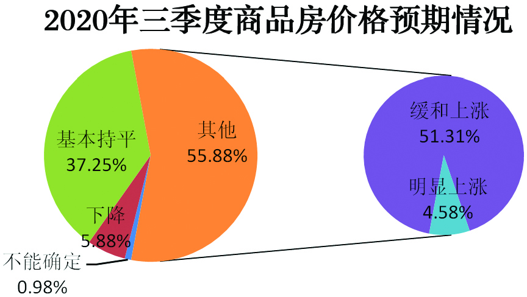
从商品房价格预期走势看，三季度商品房总体价格上涨预期明显回升，较上期增加了27.08个百分点；与去年同期的61.44%相比，减少5.55个百分点。
与上期55.96%的人预计商品房总体价格基本持平相比，本期持看平预期的人数占比减少18.71个百分点；与去年同期的33.99%相比，变化不明显。
本期持下降预期的人数再回极低位占比，与上期的14.23%相比，下降了8.35个百分点；与去年同期的3.27%相比，变化不明显。
调查显示，相对于上期，本期商品房总体价格看涨预期明显升温，由平稳预期转为以缓涨预期为主；与去年同期相比，本期持看涨预期人数占比略有下降，总体变化不大。
从全省各地商品房价格预期情况来看，与上期相比, 三季度各地商品房价格看涨预期普遍有所提高。其中，南京、无锡、徐州、常州、南通、连云港、淮安、扬州、宿迁9个市商品房价格以缓涨预期为主；其余苏州、盐城、镇江、泰州4个市商品房价格以看平预期为主。
4月份以来，随着省内疫情防控形势持续向好且总体趋向稳定，企业复工复产和复员复岗不断推进，我省各地楼市逐步回暖，个别地方甚至出现“千人摇号”、“万人摇号”盛况，省会南京4月份房价涨幅更是位居全国第一。楼市在后疫情时期能够率先实现强劲复苏，一方面是前期积压住房需求集中释放的必然结果，同时也有利用限价新盘摇号、地价上涨等信息进行炒作的成分，需要高度警惕。针对近阶段房地产市场出现的过热苗头、投机炒作露头及市场预期变化等情况，6月5日，南京出台了“限房价、竞地价”新政，省内其他地区政府及有关部门也应保持高度警惕，继续坚持“房住不炒”定位，因城因势综合施策，合理引导市场价格预期，加强市场监管，推动楼市平稳健康发展，同时在货币环境相对宽松的背景下，要切实守住实体经济信贷“水源”，谨防资金流向房地产市场进而形成对实体经济和消费市场的“挤出效应”。
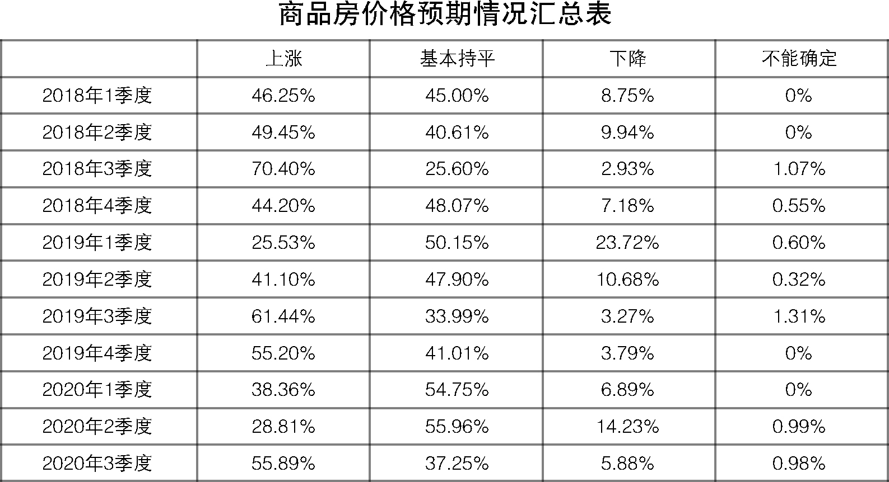
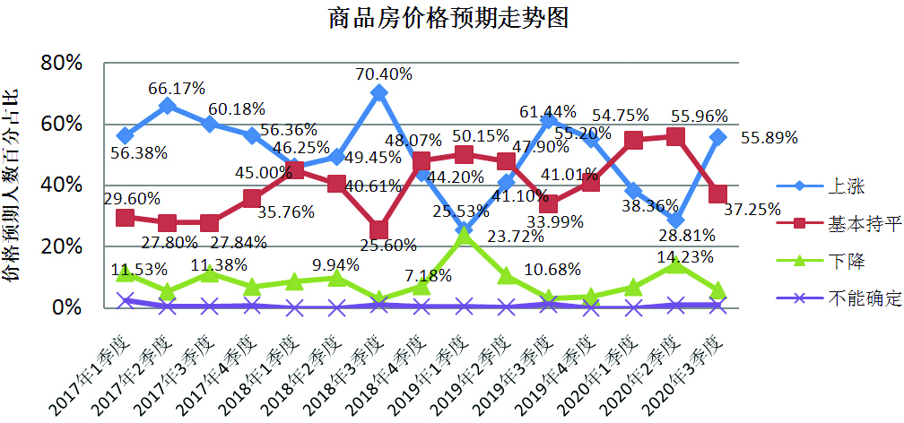
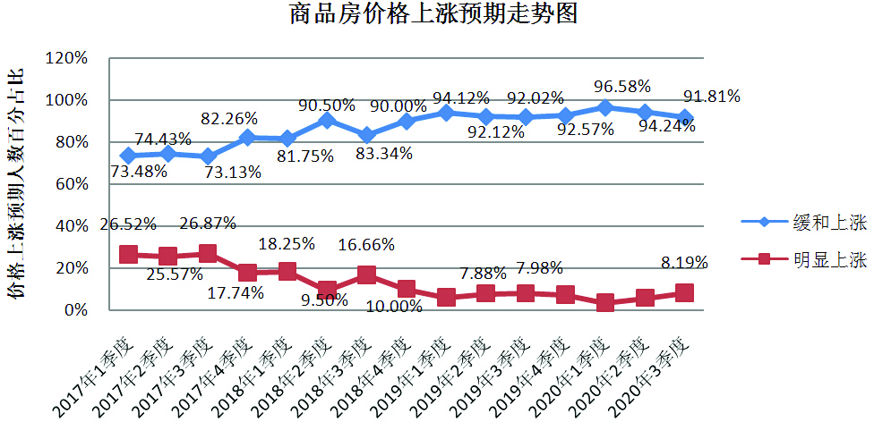
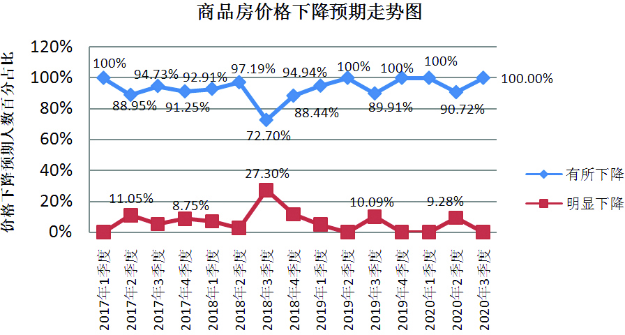
江苏省物价局-江苏省物价局网站
二○二○年六月